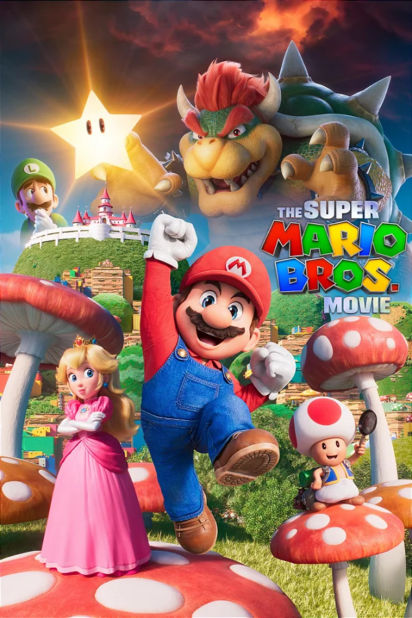

Super Mario Bros.
Super Mario Bros. é um jogo de plataforma desenvolvido e publicado pela Nintendo em 1985. É um dos jogos mais icônicos e influentes da história, e apresenta o personagem Mario em sua jornada para salvar a Princesa Peach do vilão Bowser.
Pac-Man

Pac-Man é um jogo de arcade desenvolvido e publicado pela Namco em 1980. É considerado um dos jogos mais famosos e bem-sucedidos da história, e apresenta o personagem amarelo redondo, Pac-Man, que deve comer todos os pontos em um labirinto enquanto evita os fantasmas.
Tetris

Tetris é um jogo de quebra-cabeça desenvolvido e publicado pela empresa russa Elorg em 1984. É um jogo de sucesso mundial que apresenta blocos em diferentes formas que caem do topo da tela e devem ser organizados pelo jogador para formar linhas completas.
The Legend of Zelda

The Legend of Zelda é um jogo de ação e aventura desenvolvido e publicado pela Nintendo em 1986. É um jogo que apresenta o personagem Link em sua jornada para salvar a Princesa Zelda e derrotar o vilão Ganon, em um mundo de fantasia chamado Hyrule.
Space Invaders
Space Invaders é um jogo de arcade desenvolvido e publicado pela Taito em 1978. É um dos jogos mais populares e influentes da história, e apresenta o jogador controlando uma nave espacial para destruir uma frota de invasores alienígenas que descem lentamente pela tela.
Donkey Kong
Donkey Kong é um jogo de arcade desenvolvido e publicado pela Nintendo em 1981. É um jogo que apresenta o personagem Mario em uma jornada para salvar sua namorada Pauline do gorila Donkey Kong. O jogo é um clássico dos jogos de plataforma e foi um dos primeiros jogos a apresentar um enredo com personagens definidos.
Sonic the Hedgehog

Sonic the Hedgehog é um jogo de plataforma desenvolvido e publicado pela Sega em 1991. É um jogo que apresenta o personagem Sonic, um ouriço azul que corre em alta velocidade para derrotar o vilão Dr. Robotnik e salvar seus amigos animais.
Street Fighter II
Street Fighter II é um jogo de luta desenvolvido e publicado pela Capcom em 1991. É um jogo que apresenta uma grande variedade de personagens de todo o mundo, que competem em torneios de artes marciais para determinar o melhor lutador do mundo.
Final Fantasy VII

Final Fantasy VII é um jogo de RPG desenvolvido e publicado pela Square Enix em 1997. É um jogo que apresenta um enredo complexo e emocional, ambientado em um mundo de fantasia futurista, e segue o personagem Cloud Strife em sua luta contra a megacorporação Shinra e o vilão Sephiroth.
Metal Gear Solid

Metal Gear Solid é um jogo de ação e stealth desenvolvido e publicado pela Konami em 1998. É um jogo que apresenta o personagem Solid Snake em sua missão para deter uma ameaça nuclear, e apresenta jogabilidade furtiva e uma narrativa complexa e cinematográfica.